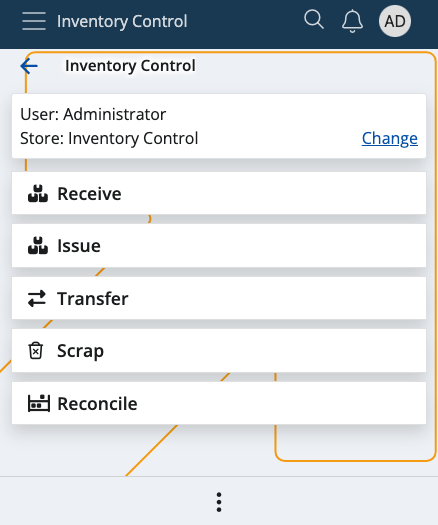

Inventory Control
Inventory Control is a mobile inventory management application designed to speed up and simplify basic operations with store orders. It's perfectly suitable for shops and smaller stores.
It follows a similar logic to the BarCodeCommand panel from within the Desktop Client and allows workers to complete their daily tasks quickly, without going through the more complex procedures of the WMS module.
You can receive, issue, reconcile, transfer and scrap orders in just a few steps. These actions are not synchronized in real-time with the ERP.net system - you need to generate the respective receipt transaction, issue transaction, transfer order, and reconciliation documents in order to reflect them.

Prerequisites
Before you start using Inventory Control, you'll be prompted to select the store for which you want to perform different operations.
That store will be saved for follow-up operations but can easily be switched to a different one with the help of the Change button.

Learn more about Inventory Control in the following articles: